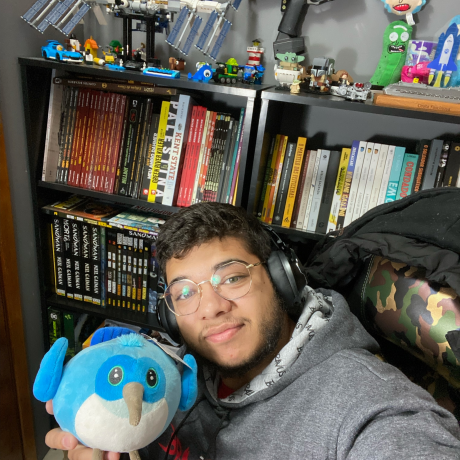

<eliseu/>
CV
PT
EN
ES
IT
◐
Eliseu Codinhoto
zeucxb@gmail.com
LinkedIn
GitHub

Product Eng.
🤖 AI Platform
🇪🇺 EU Citizen
São Paulo, BR
0
0
Flutter Live 2018
2018
A caixa de ferramentas do JS funcional
2018
Como é trabalhar como Desenvolvedor Backend
2017
GO além do Pokémon
2016
Criando CLI globais com NodeJS
2016
zeucxb@gmail.com
LinkedIn
GitHub
X / Twitter
YouTube
Medium